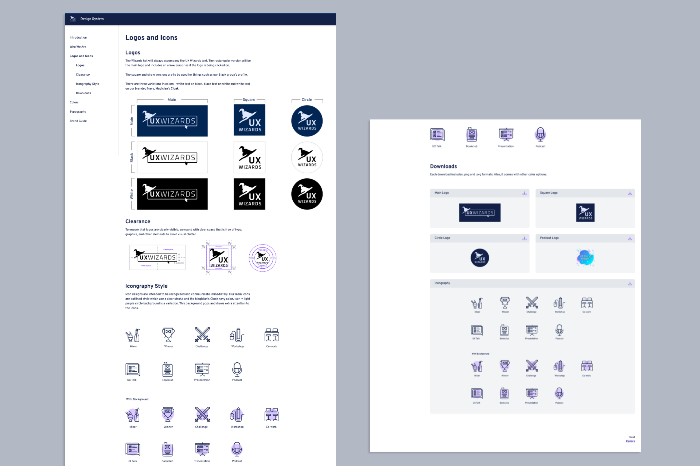
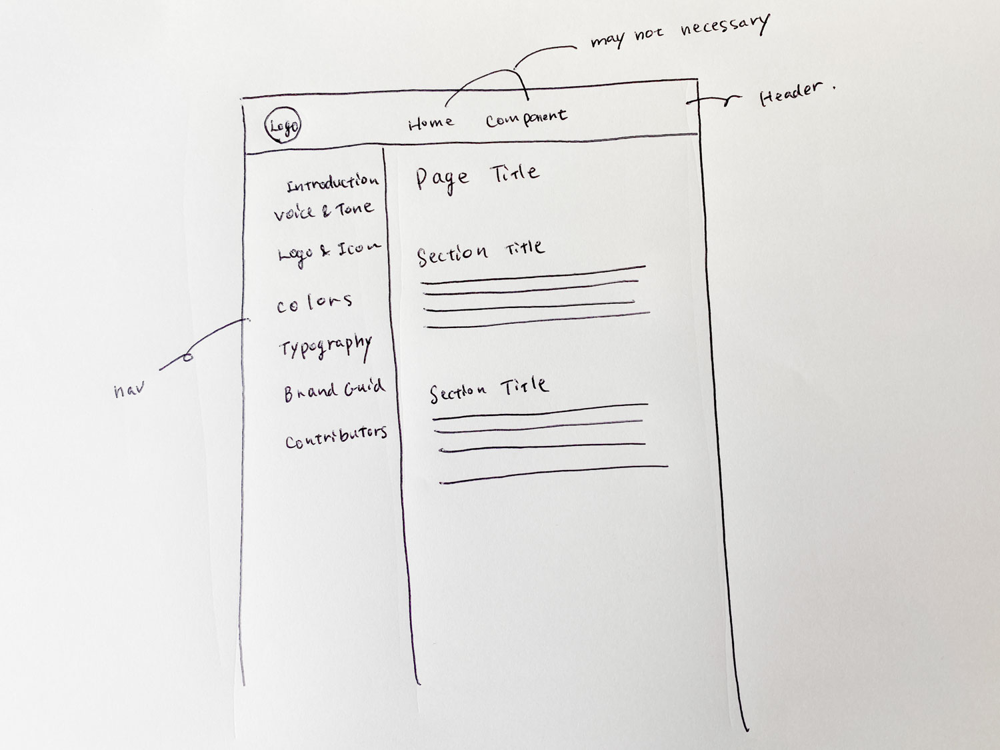
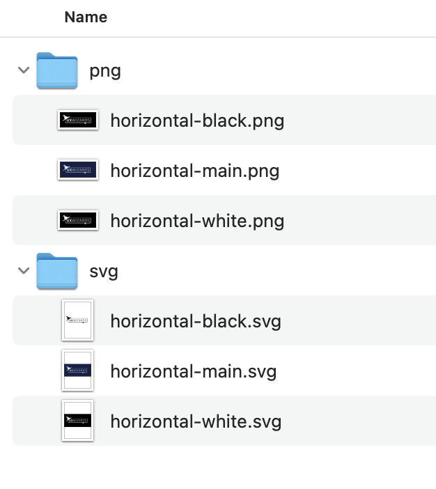
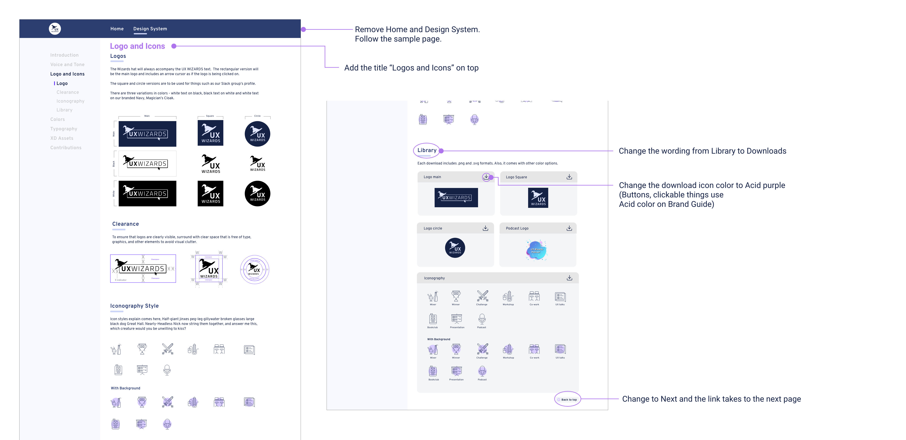
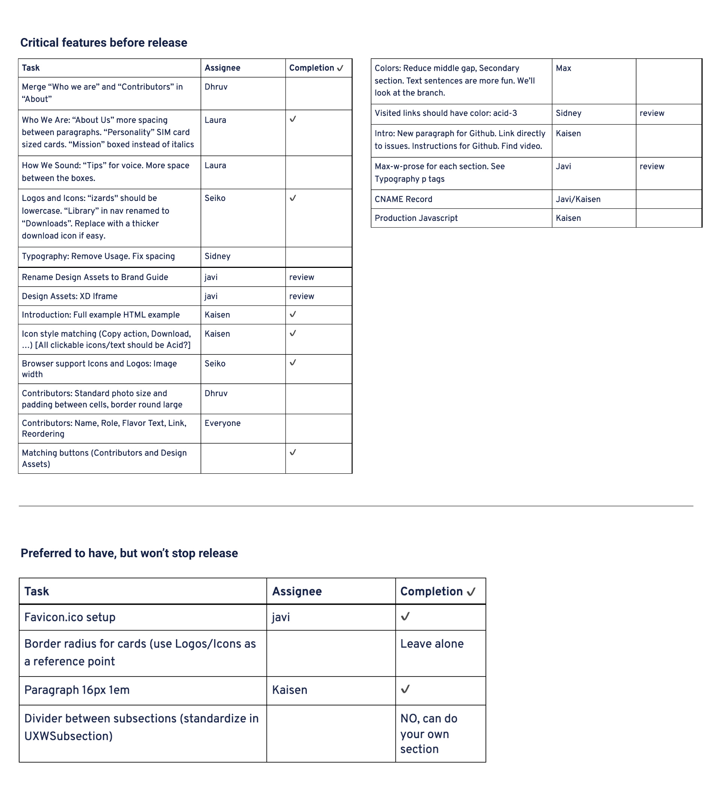

UX Wizards is a design community for enthusiasts of all levels to share knowledge and grow together. This web design system project was made to centralize the group’s resources on the web and build out future content faster. We used the UX Wizards Brand Guide content and brought it into the Design System site as an MVP.
7 designers and developers joined this project and everyone was assigned a page to design and build. I was in charge of the Logo and Icons Page.
Previously, the design team shared the logo and asset folders whenever volunteers needed them. This happened quite often and had become an inefficient use of time. In addition, the Brand Guide had different versions and sometimes volunteers would use the wrong one. Version control and an ease of access had become an issue.
Create an MVP of the Web Design System to centralize resources so that UX Wizards volunteers have easy access to the Brand Guide and graphic components.
The project length was set to no more than 10 weeks with 3 iterations. Each project member was assigned a single page to design and build. Our plan was to use the existing Brand Guide content, add some reusable components and display it on the website.
These pages were chosen for the web design system:
It was important to sync and review with team members throughout the project to ensure we remained consistent with standardizing the layout, color, and style between us. Meetings consisted of checking everyone’s progress and doing quality control so the final product would look unified and compatible.
We researched existing design system websites and looked at overall site and navigation as well as individual assigned pages design. Each member researched individually and did a 5 minute presentation to the team.
Consensus was that the team liked the navigation on the left side because it was easy to scan through the categories. With the side navigation you only needed one or two clicks to take you to your desired page. We agreed on the website layout and moved on to the design phase.
From the design stage, we started working individually on our page designs and received feedback during weekly meetings. Most pages were similar to the Brand Guide’s content structure, however the Colors page design was quite different. The Color page included CSS color code snippets to standardize the colors code and create a reusable component.
I was in charge of the Logos and Icons page. The section below is focused on this page.
As I mentioned above, the majority of the content was brought from Brand Guide. One difference from Brand Guide was to include a section of downloadable graphic assets. We received feedback that volunteers didn’t know where to access logo files and often needed to ask around for them. A downloadable assets section was added to this page to avoid this problem. I decided a separate page was not needed for this section because the number of assets was limited.
UX Wizards logo has 3 colors: navy, black and white. Should each color be downloadable or in one package that includes all the colors? If each color is downloadable, the page would be long and it would be hard to find the right logo to download. As a result, I made one package per logo style which included .png and .svg files.
The file formats chosen were .png and .svg. The reason for this is the .png format is used on most occasions such as uploading to a site or for graphics. The other .svg file is most practical for designers that may need to change the graphic sizes, colors or the printable format without rasterization.
This was demonstrated to the team to show how the site behaved when users clicked on a navigation link and scrolled down the page.
* Behaviors #1 and #2 were adopted on the final site. Behavior #3 was switched to become a “Next Page” button.
We had some workshops to learn basic coding before we did the development stage. One of our developers set up a site with a sample page. When building our own page, we referred to the sample page and filled it out with our own content. Small adjustments like font sizes, content width and colors were made to be more consistent across all pages.
The main tools we used were:
A few small changes were made during development. The Wording Library was switched to Download to have a clearer message. The download icon button color was changed to the color “Acid Purple” (one of our brand color names). We standardized buttons and clickable links to be the color Acid Purple so that the download button followed the style set.
My last struggle was cross browser rendering. Different browsers render in different ways. I was using the Chrome browser during development and it looked good. Before wrapping up the project, I tested different browsers and found problems. Chrome looked good but Safari and Firefox didn’t render the graphics with the right aspect ratio. When I fixed Safari, this would break Chrome’s rendering. Eventually I was able to figure it out and fix it; it was a flex box frame setting. Making sure to test different browsers was a big takeaway from this project.
Two weeks before launching, we had a team review and prioritized final tasks. Tasks were categorized to critical features and won’t stop release. Instead of focusing on small details, we decided to complete necessary features and launch before the due date. This worked well to understand how many critical tasks we left and the importance of tasks.
We achieved our goal to build a Design System MVP based on the Brand Guide. The next step will be adding more components like buttons, input states and the spacing guides for the digital products.
PROJECT: UX Wizards Web Design System
YEAR: 2021, 9 weeks
ROLE: Design and Frontent Development
TEAM: Seiko (self), Kaisen, Laura, Max, Sidney, Javier, Dhruv
Adobe XD, React, Github, Tailwind